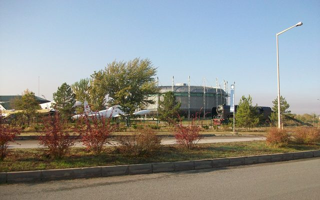

Inicio › Qué ver, provincia por provincia › Ankara
La guía Kültür Varlıkları reúne 36 lugares en Ankara: 29 museo, 4 yacimiento arqueológico, 2 castillo y edificio histórico, 1 edificio religioso. A continuación encontrará lo más destacado, un mapa y la lista completa.
⭐ Lo más destacado

1 · Ankara · MuseoMuseo de las Civilizaciones de Anatolia
El Museo de las Civilizaciones de Anatolia se encuentra al pie del castillo de Ankara, en el bazar de Mahmut Paşa y el Kurşunlu Han, del siglo XV, restaurados.

2 · Ankara · MuseoMuseo de Gordion
El Museo de Gordion está en el pueblo de Yassıhöyük, cerca de Polatlı, junto a Gordion, capital del reino frigio: la ciudad del legendario rey Midas y del «nudo…

3 · Ankara · MuseoMuseo de la Democracia del 15 de Julio
El Museo de la Democracia del 15 de Julio es un museo de historia reciente creado para documentar el intento de golpe de Estado de la noche del 15 de julio de 2016 y lo…
🗺 En el mapa
📍 Todos los lugares (36)
Museo (29)
Museo de las Civilizaciones de AnatoliaMuseoMuseo de GordionMuseo · UNESCOMuseo de la Democracia del 15 de JulioMuseo Museo del Cuartel de AlagözMuseo
Museo del Cuartel de AlagözMuseo Museo al Aire Libre de AltınköyMuseo
Museo al Aire Libre de AltınköyMuseo Museo al Aire Libre «Aldea Viva de Anatolia»Museo
Museo al Aire Libre «Aldea Viva de Anatolia»Museo Museo del Juguete de AnkaraMuseo
Museo del Juguete de AnkaraMuseo AnıtkabirMuseo
AnıtkabirMuseo Residencia de Atatürk y Museo del FerrocarrilMuseo
Residencia de Atatürk y Museo del FerrocarrilMuseo Museo Viviente de BeypazarıMuseo
Museo Viviente de BeypazarıMuseo CerModernMuseo
CerModernMuseo Museo de la RepúblicaMuseo
Museo de la RepúblicaMuseo Museo de Arqueología y Arte ErimtanMuseo
Museo de Arqueología y Arte ErimtanMuseo Museo EtnográficoMuseo
Museo EtnográficoMuseo Museo del Ajedrez de la Fundación GökyayMuseo
Museo del Ajedrez de la Fundación GökyayMuseo Museo de la Fuerza Aérea de AnkaraMuseo
Museo de la Fuerza Aérea de AnkaraMuseo Museo de la Guerra de IndependenciaMuseo
Museo de la Guerra de IndependenciaMuseo Museo de Industria y Tecnología MKEMuseo
Museo de Industria y Tecnología MKEMuseo
Museo de Ciencia y Tecnología de la METUMuseo Museo de Pintura y EsculturaMuseo
Museo de Pintura y EsculturaMuseo Museo al Aire Libre de Locomotoras de Vapor de TCDDMuseo
Museo al Aire Libre de Locomotoras de Vapor de TCDDMuseo Museo de la Estación de MalıköyMuseo
Museo de la Estación de MalıköyMuseo Museo de la Asociación Aeronáutica TurcaMuseo
Museo de la Asociación Aeronáutica TurcaMuseo Museo de la Prisión de UlucanlarMuseo
Museo de la Prisión de UlucanlarMuseo Museo Çengelhan Rahmi M. KoçMuseoMuseo de la GendarmeríaMuseoMuseo de los Mártires del 15 de Julio y de la Democracia de KahramankazanMuseoMuseo-Biblioteca de Literatura Mehmet Akif ErsoyMuseoMuseo de Historia Natural MTA ŞehvarMuseo
Museo Çengelhan Rahmi M. KoçMuseoMuseo de la GendarmeríaMuseoMuseo de los Mártires del 15 de Julio y de la Democracia de KahramankazanMuseoMuseo-Biblioteca de Literatura Mehmet Akif ErsoyMuseoMuseo de Historia Natural MTA ŞehvarMuseoYacimiento arqueológico (4)
 Teatro romano de AnkaraYacimiento arqueológico
Teatro romano de AnkaraYacimiento arqueológico Templo de AugustoYacimiento arqueológico
Templo de AugustoYacimiento arqueológico Necrópolis de JuliópolisYacimiento arqueológico
Necrópolis de JuliópolisYacimiento arqueológico Termas romanas de AnkaraYacimiento arqueológico
Termas romanas de AnkaraYacimiento arqueológicoCastillo y edificio histórico (2)


Edificio religioso (1)

🧭 Rutas que incluyen esta provincia
🏺 Guías de civilizaciones relacionadas
Las primeras aldeas de Anatolia: Aşıklı Höyük y Çatalhöyük8300–5700 a. C. · NeolíticoLos hititas y los reinos neohititas1650–700 a. C. · Edad del Bronce y del HierroFrigios y lidiosSiglos IX–VI a. C. · Edad del HierroDe Galípoli a la República1915 – 1923Los selyúcidas y los beylicatos1071 – siglo XVAnatolia en época romana133 a. C. – siglo IV d. C.